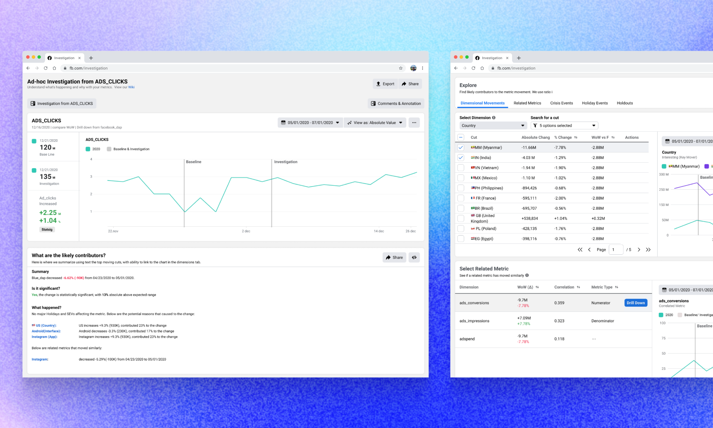
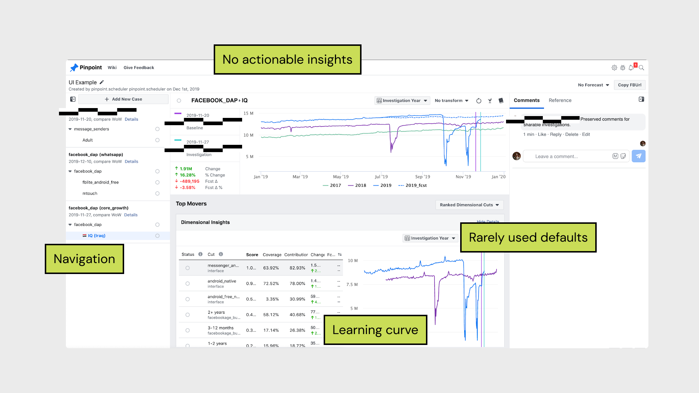
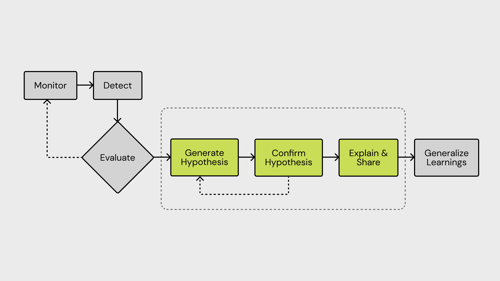
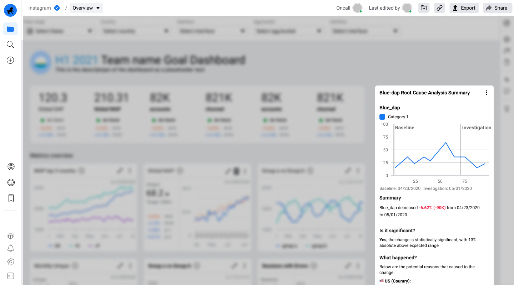
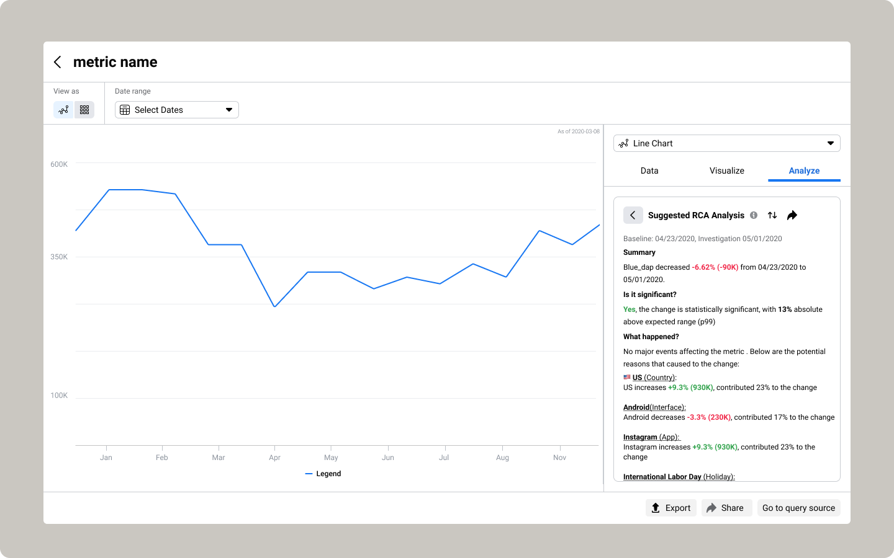
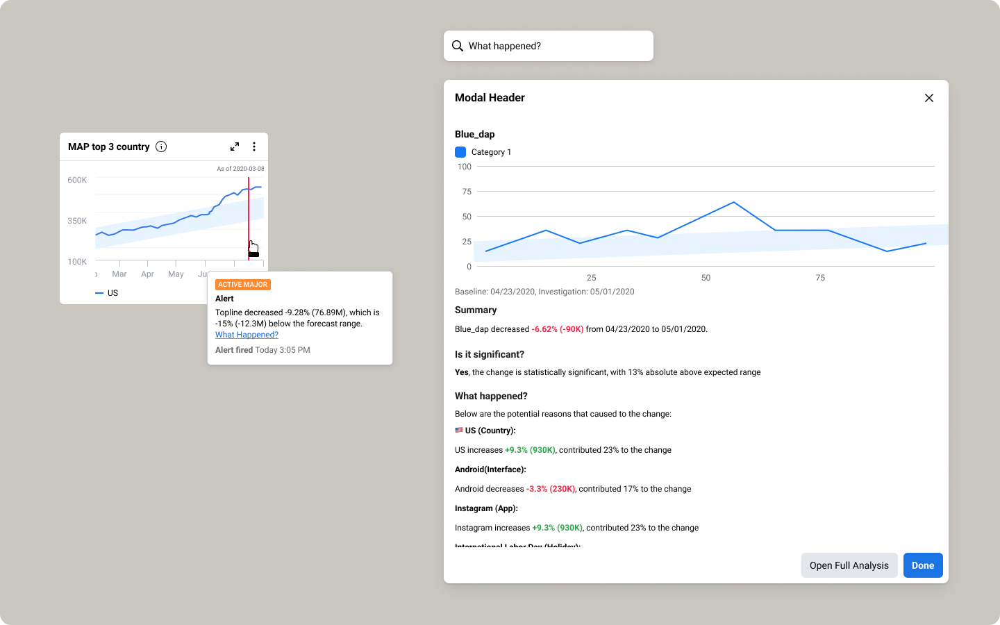

Metric Investigation
Overview
Redesign of Meta's root cause analysis tool to help people figure out what happened to their data. The team launched the e2e experience within five weeks with a 92% increase in users.

Goals
Employees at Meta use many internal data tools to perform similar tasks. Data scientists spend hours every week on repetitive data analysis, which is time-consuming and tedious. We need an automated solution, rather than writing one-off SQL, so they can focus on more exploratory work. Additionally, the investigation process should be streamlined into a single, easy-to-use workflow that serves as the single source of truth across all internal tools.
Target Audience
Our target users are internal employees who utilize metrics to make decisions. From our foundational study, we categorized all the users into two personas:
- Data Consumers — look at the analysis and consume reports to make better decisions.
- Data Developers — building dashboards and pipelines to ensure the data is accurate and reliable.

We started by doing a round of heuristic evaluation on the current investigation tool. We talked to 8 users and categorized major problems:
- Navigation — Users don't know where they are and it's hard to find actionable insights.
- Trust — Data scientists usually have a hypothesis in their mind (usually a country is the reason for the change). However, the tool hasn't defaulted to their liking and they can't customize it.
- Acquisition — Hard to set up root cause analysis. Users have to set up auto-run, which is a cumbersome process.
- Design and layout — Confusing headers, rarely-used sidebars and complex columns.
I worked with the engineering team to brainstorm ideas for how we could make the most impact within the limited time frame. We decided to focus the project on making it easier for users to find actionable insights, as well as updating the design to provide meaningful insights in the context of what the users are doing, regardless of the tool they are using.
"It's to complicated. I showed the results to our leadership and they were confused."
— Data Analyst

The first design iteration focused on the following:
- Match with our internal design system — Customized certain widgets (e.g. topline metric card) to show relevant information for users.
- Progressive disclosure — Show a few important columns so users can learn as they customize their layout.
- Summary section — A back-end powered summary that explains what happened to the metric and the potential reasons.
- Navigation — A tab structure to minimize the pain of long vertical scrolling.
Throughout the usability testing of the initial design, we realized that users wanted to see the summary section on other surfaces and tools, as their analysis often takes place in notebooks, dashboards, or presentations.



We launched the new design and got a promising impact within a month:
- 178% increase in metrics monitored
- 92% service engage users growth
- 50% impression growth
- UI used to be the top two complaints from previous surveys — now it's dropped to fifth